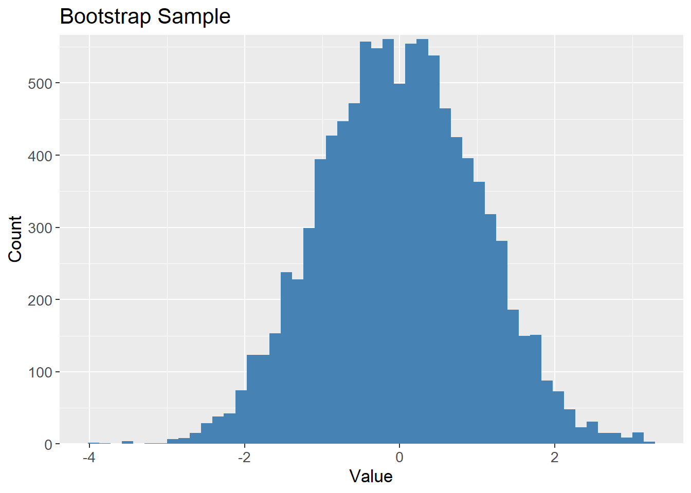
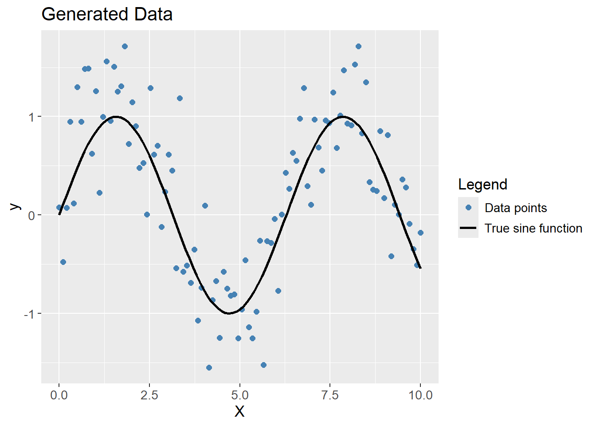

Show the code
set.seed(1337)
library("tidymodels")
tidymodels::tidymodels_prefer()Set seed and load packages.
set.seed(1337)
library("tidymodels")
tidymodels::tidymodels_prefer()Load data.
X <- seq(0, 10, length.out = 100)
y_poly <- sin(X) + rnorm(100, 0, 0.4)
df_poly <- tibble(X = X,
y = y_poly)Helper functions.
create_poly_pred <- function(data,
degree) {
df_sample <- data |>
sample_frac(1,
replace = TRUE)
poly_spec <- linear_reg() |>
set_engine("lm") |>
set_mode("regression")
poly_recipe <- recipe(y ~ X,
data = data) |>
step_poly(X,
degree = degree)
poly_workflow <- workflow() |>
add_model(poly_spec) |>
add_recipe(poly_recipe)
poly_fit <- poly_workflow |>
fit(data = df_sample)
poly_pred <- data |>
mutate(y_pred = predict(poly_fit, new_data = data)$.pred)
return(poly_pred)
}
plot_multiple_poly_models <- function(data,
degree,
n_models) {
p <- ggplot(data,
aes(x = X,
y = y)) +
geom_point(aes(color = "Data points")) +
stat_function(fun = sin,
aes(color = "True sine function")) +
labs(title = stringr::str_c("Polynomial Degree ", degree, " with Multiple Fits"),
x = "X",
y = "y",
color = "Legend") +
lims(y = c(-2, 2))
for (i in 1:n_models) {
df_pred_poly <- data |>
create_poly_pred(degree = degree)
p <- p + geom_line(data = df_pred_poly,
aes(y = y_pred,
color = "Polynomial"),
alpha = 0.3)
}
p <- p + scale_color_manual(values = c("Data points" = "steelblue",
"True sine function" = "black",
"Polynomial" = "red"))
return(p)
}In supervised machine learning, the ultimate goal is usually to create models which can predict the response of unseen data. This is the ability of a model to generalize well to new data and is measured by the Generalization Error. The ability to generalize can be decomposed into the balance between bias and variance of a model. Therefore, understanding bias and variance is crucial in machine learning since it aids in developing models that generalize well to new data.
The bias of a model is measured by how close the predictions for different training sets are to the true values. A model with low bias make predictions close to the true values, whereas a model with high bias make predictions that are far from the true values. High bias usually occurs when a model is too simple, and cannot capture the underlying complex structure of the data. For example, a linear model will have high bias when the true relationship between the features and the target is non-linear. Opposite, low bias occurs when a model is complex enough to capture the underlying structure of the data, but can also occur when the model is too complex and overfits the data. To measure whether the model has overfit, the variance is introduced.
The variance of a model is measured by how much the predictions vary for different training sets, i.e. how much the model simply just memorizes the training data and fits too closely to the data points. A model with low variance makes similar predictions for different training sets, whereas a model with high variance makes different predictions for different training sets. High variance usually occurs when a model is too complex and fits the noise of the data. A polynomial model of high degree is an example of a model with high variance, as it models tightly to the data points. A low variance model generalizes well to new data, as it makes similar predictions for different training sets, but it tends to make incorrect predictions, i.e. have high bias.
Models with low bias (precise on average) tends to have high variance (inconsistent across training sets) and vice versa. An optimal model has a both low bias and variance, but since it is difficult to obtain, a good balance between bias and variance is usually sought. This is called the Bias-Variance Tradeoff.
Ridge Regression is a good example of the Bias-Variance Tradeoff. When the penalty is set to 0, the Ridge model is the OLS solution. Assuming that there is a linear relationship between the features and the response, the OLS model has low bias as it on average makes predictions close to the true values. However, the OLS model has high variance as it is sensitive to the noise in the data. By applying Ridge penalty, the coefficients of the model is reduced, and is thereby less sensitive to the noise in the data - lower variance and a lower chance of overfitting. Meanwhile, it also forces the model to fit the data less closely, which increases the bias of the model.
A detail which proves difficult to understand, is that an obtained data set, e.g. the iris data set is in itself a sample from some total population. It is not feasible to measure all iris flowers, and as such the true relationship between the features and the target is unknown. Therefore, the bias and variance of a model is not directly measurable, as it is not possible to compare the predictions of the model to the true values. Instead, it is assumed that the obtained data set is a good representation of the total population, i.e. they have similar distributions. Bias and variance is estimated by fitting a model multiple times to different training sets, but only one data set is available. Cross-validation is a method for estimating the bias and variance of a model, as it simulates different training sets. It is done by splitting the data set into multiple training and validation sets, again assuming each fold is a good representation of the total population. Another method is the Bootstrap method which is applied in the below examples. A Bootstrap sample is a sample drawn with replacement from the original data set. Usually, the sample drawn is of the same size as the total data set. With replacement means that the same observation can be drawn multiple times, which is how the Bootstrap samples differs from the original data set.
To exemplify what is meant by the Bootstrap method, a sample of 10 numbers is drawn from the numbers 1 to 10. The sample is drawn with replacement, meaning that the same number can be drawn multiple times:
sample_10 <- tibble(1:10)
sample_frac(sample_10,
1,
replace = TRUE)# A tibble: 10 × 1
`1:10`
<int>
1 10
2 6
3 1
4 10
5 3
6 10
7 4
8 4
9 10
10 5To visualize the Bootstrap method, 10000 samples are drawn from a normal distribution with mean 0 and standard deviation 1, and plotted. The histogram is expected to follow the known bell shape of the normal distribution:
samples_10k <- rnorm(10000) |>
as_tibble()
samples_10k |>
ggplot(aes(x = value)) +
geom_histogram(bins = 50,
fill = "steelblue") +
labs(title = "Normal Distribution",
x = "Value",
y = "Count")Bootstrapping the samples should result in a similar distribution, but contains different values, i,e. different data sets but drawn from the same distribution:
# Bootstrap sample
bootstrap_10k <- samples_10k |>
sample_frac(1,
replace = TRUE)
bootstrap_10k |>
ggplot(aes(x = value)) +
geom_histogram(bins = 50,
fill = "steelblue") +
labs(title = "Bootstrap Sample",
x = "Value",
y = "Count")
To visualize the meaning of bias and variance, a data set has been randomly generated with a sine function and some noise (random jitter). Polynomials of different degrees are then fitted to the data. For properly visualizing the terms, models are fitted to multiple samples taken from the data. Therefore, the data set is resampled with the Bootstrap method to simulate different training sets but with the same distribution.
The expectation is, that a polynomial of low degree makes a bad prediction on average, but is consistent across different training sets, i.e. high bias and low variance. A polynomial of high degree makes a good prediction on average, but is inconsistent across different training sets, i.e. low bias and high variance. The optimal model is a polynomial of moderate degree, which makes good predictions and is consistent across different training sets.
The data generated show clear signs of following a sine function, but with some noise. The black line is the true sine function, and the blue points are the generated data.
ggplot(df_poly, aes(x = X, y = y)) +
geom_point(aes(color = "Data points")) +
stat_function(aes(color = "True sine function"),
fun = sin) +
labs(title = "Generated Data",
x = "X",
y = "y",
color = "Legend") +
scale_color_manual(values = c("Data points" = "steelblue",
"True sine function" = "black"))
A polynomial of degree 1 (a linear prediction), obviously do not capture the complexity of the data, but is consistent across different training sets, i.e. high bias and low variance.
df_poly |>
plot_multiple_poly_models(degree = 1,
n_models = 30)A polynomial of degree 20 captures the complexity of the data, but also models the noise which was added, but the average of the models are close to the true sine function. The model is overfitting the data, thereby creating variance between different Bootstrap samples, i.e. low bias and high variance.
df_poly |>
plot_multiple_poly_models(degree = 20,
n_models = 30)A polynomial of degree 4 captures the complexity of the data without fitting too tightly to the noise. The average of the models are close to the true sine function, and the models are consistent across different training sets, i.e. low bias and low variance. Hence, it is the optimal model out of degree 1, 20 and 4.
df_poly |>
plot_multiple_poly_models(degree = 4,
n_models = 10)sessioninfo::session_info()─ Session info ───────────────────────────────────────────────────────────────
setting value
version R version 4.3.3 (2024-02-29 ucrt)
os Windows 11 x64 (build 22631)
system x86_64, mingw32
ui RTerm
language (EN)
collate English_United Kingdom.utf8
ctype English_United Kingdom.utf8
tz Europe/Copenhagen
date 2024-05-29
pandoc 3.1.11 @ C:/Program Files/RStudio/resources/app/bin/quarto/bin/tools/ (via rmarkdown)
─ Packages ───────────────────────────────────────────────────────────────────
package * version date (UTC) lib source
backports 1.4.1 2021-12-13 [1] CRAN (R 4.3.1)
broom * 1.0.5 2023-06-09 [1] CRAN (R 4.3.3)
cachem 1.0.8 2023-05-01 [1] CRAN (R 4.3.3)
class 7.3-22 2023-05-03 [2] CRAN (R 4.3.3)
cli 3.6.2 2023-12-11 [1] CRAN (R 4.3.3)
codetools 0.2-19 2023-02-01 [2] CRAN (R 4.3.3)
colorspace 2.1-0 2023-01-23 [1] CRAN (R 4.3.3)
conflicted 1.2.0 2023-02-01 [1] CRAN (R 4.3.3)
data.table 1.15.4 2024-03-30 [1] CRAN (R 4.3.3)
dials * 1.2.1 2024-02-22 [1] CRAN (R 4.3.3)
DiceDesign 1.10 2023-12-07 [1] CRAN (R 4.3.3)
digest 0.6.35 2024-03-11 [1] CRAN (R 4.3.3)
dplyr * 1.1.4 2023-11-17 [1] CRAN (R 4.3.2)
ellipsis 0.3.2 2021-04-29 [1] CRAN (R 4.3.3)
evaluate 0.23 2023-11-01 [1] CRAN (R 4.3.3)
fansi 1.0.6 2023-12-08 [1] CRAN (R 4.3.3)
farver 2.1.1 2022-07-06 [1] CRAN (R 4.3.3)
fastmap 1.1.1 2023-02-24 [1] CRAN (R 4.3.3)
foreach 1.5.2 2022-02-02 [1] CRAN (R 4.3.3)
furrr 0.3.1 2022-08-15 [1] CRAN (R 4.3.3)
future 1.33.2 2024-03-26 [1] CRAN (R 4.3.3)
future.apply 1.11.2 2024-03-28 [1] CRAN (R 4.3.3)
generics 0.1.3 2022-07-05 [1] CRAN (R 4.3.3)
ggplot2 * 3.5.1 2024-04-23 [1] CRAN (R 4.3.3)
globals 0.16.3 2024-03-08 [1] CRAN (R 4.3.3)
glue 1.7.0 2024-01-09 [1] CRAN (R 4.3.3)
gower 1.0.1 2022-12-22 [1] CRAN (R 4.3.1)
GPfit 1.0-8 2019-02-08 [1] CRAN (R 4.3.3)
gtable 0.3.5 2024-04-22 [1] CRAN (R 4.3.3)
hardhat 1.3.1 2024-02-02 [1] CRAN (R 4.3.3)
htmltools 0.5.8.1 2024-04-04 [1] CRAN (R 4.3.3)
htmlwidgets 1.6.4 2023-12-06 [1] CRAN (R 4.3.3)
infer * 1.0.7 2024-03-25 [1] CRAN (R 4.3.3)
ipred 0.9-14 2023-03-09 [1] CRAN (R 4.3.3)
iterators 1.0.14 2022-02-05 [1] CRAN (R 4.3.3)
jsonlite 1.8.8 2023-12-04 [1] CRAN (R 4.3.3)
knitr 1.46 2024-04-06 [1] CRAN (R 4.3.3)
labeling 0.4.3 2023-08-29 [1] CRAN (R 4.3.1)
lattice 0.22-5 2023-10-24 [2] CRAN (R 4.3.3)
lava 1.8.0 2024-03-05 [1] CRAN (R 4.3.3)
lhs 1.1.6 2022-12-17 [1] CRAN (R 4.3.3)
lifecycle 1.0.4 2023-11-07 [1] CRAN (R 4.3.3)
listenv 0.9.1 2024-01-29 [1] CRAN (R 4.3.3)
lubridate 1.9.3 2023-09-27 [1] CRAN (R 4.3.3)
magrittr 2.0.3 2022-03-30 [1] CRAN (R 4.3.3)
MASS 7.3-60.0.1 2024-01-13 [2] CRAN (R 4.3.3)
Matrix 1.6-5 2024-01-11 [2] CRAN (R 4.3.3)
memoise 2.0.1 2021-11-26 [1] CRAN (R 4.3.3)
modeldata * 1.3.0 2024-01-21 [1] CRAN (R 4.3.3)
munsell 0.5.1 2024-04-01 [1] CRAN (R 4.3.3)
nnet 7.3-19 2023-05-03 [2] CRAN (R 4.3.3)
parallelly 1.37.1 2024-02-29 [1] CRAN (R 4.3.3)
parsnip * 1.2.1 2024-03-22 [1] CRAN (R 4.3.3)
pillar 1.9.0 2023-03-22 [1] CRAN (R 4.3.3)
pkgconfig 2.0.3 2019-09-22 [1] CRAN (R 4.3.3)
prodlim 2023.08.28 2023-08-28 [1] CRAN (R 4.3.3)
purrr * 1.0.2 2023-08-10 [1] CRAN (R 4.3.3)
R6 2.5.1 2021-08-19 [1] CRAN (R 4.3.3)
Rcpp 1.0.12 2024-01-09 [1] CRAN (R 4.3.3)
recipes * 1.0.10 2024-02-18 [1] CRAN (R 4.3.3)
rlang 1.1.3 2024-01-10 [1] CRAN (R 4.3.3)
rmarkdown 2.26 2024-03-05 [1] CRAN (R 4.3.3)
rpart 4.1.23 2023-12-05 [2] CRAN (R 4.3.3)
rsample * 1.2.1 2024-03-25 [1] CRAN (R 4.3.3)
rstudioapi 0.16.0 2024-03-24 [1] CRAN (R 4.3.3)
scales * 1.3.0 2023-11-28 [1] CRAN (R 4.3.3)
sessioninfo 1.2.2 2021-12-06 [1] CRAN (R 4.3.3)
stringi 1.8.3 2023-12-11 [1] CRAN (R 4.3.2)
stringr 1.5.1 2023-11-14 [1] CRAN (R 4.3.3)
survival 3.5-8 2024-02-14 [2] CRAN (R 4.3.3)
tibble * 3.2.1 2023-03-20 [1] CRAN (R 4.3.3)
tidymodels * 1.2.0 2024-03-25 [1] CRAN (R 4.3.3)
tidyr * 1.3.1 2024-01-24 [1] CRAN (R 4.3.3)
tidyselect 1.2.1 2024-03-11 [1] CRAN (R 4.3.3)
timechange 0.3.0 2024-01-18 [1] CRAN (R 4.3.3)
timeDate 4032.109 2023-12-14 [1] CRAN (R 4.3.2)
tune * 1.2.1 2024-04-18 [1] CRAN (R 4.3.3)
utf8 1.2.4 2023-10-22 [1] CRAN (R 4.3.3)
vctrs 0.6.5 2023-12-01 [1] CRAN (R 4.3.3)
withr 3.0.0 2024-01-16 [1] CRAN (R 4.3.3)
workflows * 1.1.4 2024-02-19 [1] CRAN (R 4.3.3)
workflowsets * 1.1.0 2024-03-21 [1] CRAN (R 4.3.3)
xfun 0.43 2024-03-25 [1] CRAN (R 4.3.3)
yaml 2.3.8 2023-12-11 [1] CRAN (R 4.3.2)
yardstick * 1.3.1 2024-03-21 [1] CRAN (R 4.3.3)
[1] C:/Users/Willi/AppData/Local/R/win-library/4.3
[2] C:/Program Files/R/R-4.3.3/library
──────────────────────────────────────────────────────────────────────────────